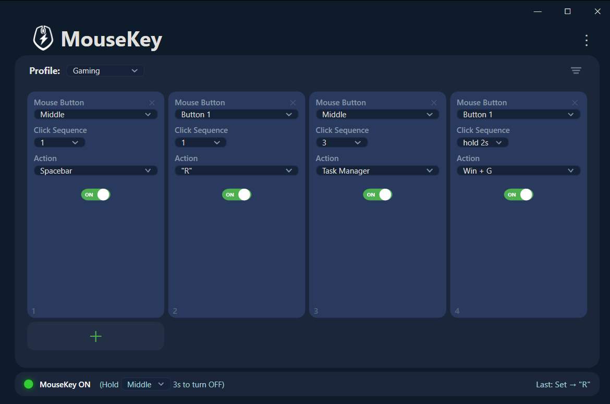

MouseKey 2.1 Main Window

Select or add any mouse button, any brand

Pick a preset action or record custom macros
Add more smart buttons to any mouse. Even basic mice without side buttons. By using MouseKey's novel click cadence technology, any button can have up to 6 actions.
A lean, fast alternative to G Hub, Synapse, and X-Mouse.

Whether you're on a basic office mouse or a gaming mouse with a dozen buttons, MouseKey lets you assign more actions than ever, without the headaches.
MouseKey's click cadence system lets you assign a different action to 1, 2, 3, 4, and 5 clicks on any single button, plus a 2-second hold for a 6th action.
MouseKey intercepts input at the system level. No proprietary drivers, no brand lock-in. If your mouse has buttons, MouseKey can remap them. Even custom and extra buttons.
No background services eating RAM. No cloud accounts. No 500MB installer. MouseKey is a single lightweight app that launches fast and stays out of your way.
Built for power users who want control without complexity.
1 to 5 clicks, plus a 2-second hold. Each pattern on any button triggers a different action. 6 actions per button.
Record keyboard shortcuts or multi-step macros with "Create Hot Key." Playback preserves your original timing between keystrokes.
Create unlimited profiles and switch between them with a mouse button. Separate setups for work, gaming, and everything else.
No telemetry, no analytics, no account. Your data stays on your device. Always.
Remap any mouse button to act as a different button. Disable buttons you don't want. Rearrange your entire mouse layout.
Runs quietly in the background. Enable, disable, or open anytime from the tray icon.
Tired of G Hub crashing, Synapse eating RAM, or X-Mouse's learning curve? MouseKey does the useful stuff without the pain.
| MouseKey | G Hub / Synapse / iCUE | X-Mouse | |
|---|---|---|---|
| Works with any mouse brand | ✓ Yes | ✗ Brand-locked | ✓ Yes |
| Multi-click cadence actions | ✓ Up to 6 | ✗ No | ✗ No |
| Simple setup (under 1 min) | ✓ Yes | ✗ Complex | ✗ Steep curve |
| Lightweight / low resource | ✓ Minimal | ✗ Heavy | ✓ Light |
| No account / no cloud | ✓ Offline only | ✗ Account needed | ✓ Offline |
| Zero telemetry | ✓ None | ✗ Sends data | ✓ None |
| Crash-free / stable | ✓ Solid | ✗ Known issues | ~ |
Each button can respond to 1 through 5 rapid clicks, plus a 2-second hold, each triggering a completely different action. A basic three-button mouse gives you up to 18 programmable shortcuts.
Click speed is similar to a standard double-click. Fast enough to feel natural, slow enough to be comfortable. If you click too slowly, nothing fires. You're always in control.
Assign clipboard actions, window snapping, mute/unmute, or app switching to spare buttons. Stop reaching for the keyboard mid-workflow.
Trigger build shortcuts, terminal commands, text snippets, or debugger actions without leaving the mouse. Speed up your entire dev loop.
Extend your mouse's capabilities without installing a manufacturer's buggy suite. Add actions to buttons those apps can't even see.
Build a fully custom input layer tailored to exactly how you work. Replace G Hub, Synapse, or X-Mouse with something that just works.
Get MouseKey from the Microsoft Store. No account required.
Click + to add button slots. Select any mouse button from the dropdown, even custom ones.
Pick from presets or record custom hotkeys. Set the click cadence (1 to 5 clicks) for each action.
MouseKey runs in the background. Your mouse is now supercharged.
No telemetry, no analytics, no advertising identifiers. MouseKey does not collect, transmit, sell, or share personal data.
MouseKey does not require network access to function. Zero background communication.
Keyboard input is recorded only when you explicitly use "Create Hot Key." No continuous logging.
All settings stored locally under your Windows profile. Nothing ever leaves the device.
Click the + button to add a new slot. Select any mouse button from the dropdown: Middle, Back, Forward, Tilt Left/Right, Scroll, or any custom button your mouse has. Choose a click sequence number (1 to 5) and assign an action from the presets or record a custom hotkey.
Each button slot has a Click Sequence setting. Setting it to 1 means single-click triggers the action. Setting it to 2 means double-click, and so on up to 5. You can also assign a 2-second hold action for a 6th shortcut per button. You can have multiple slots for the same button with different click sequences, giving you up to 6 distinct actions per button.
Select "Create Hot Key…" from the Action dropdown to record keyboard shortcuts (like Ctrl+C or Alt+Tab) or text strings. Once saved, the custom action becomes available in the current profile.
Hold your chosen disable button for 2 seconds to toggle MouseKey on or off. You can configure which button triggers this in the app settings. When disabled, all buttons return to normal. Re-enable anytime from the system tray icon or by holding the same button again.
When recording custom macros, do not record passwords, PINs, or authentication codes. Recorded macros replay input exactly as captured. MouseKey does not transmit or share recorded input.
Works with any mouse. Up to 6 actions per button. Set up in under a minute.